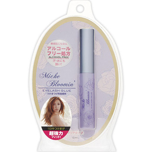

返回列表
产品名称：ミッシュ ブルーミン アイラッシュグルー

サイバードライブ ミッシュ ブルーミン アイラッシュグルー ５ｍｌ
メーカー サイバードライブ
JANコード 4560364939010
商品の特徴
アルコールフリー処方
超強力
- 成分・分量
- アクリル樹脂(50%)、水(50%)
- 用法及び用量
- 1つけまつげの根元部分にキャップについた筆で本品(つけまつげ用接着剤)をはみ出さないように塗ります。
2塗ったあと接着剤が乳白色から透明に乾くまでまぶたを接着しないでください。乾いていない接薬剤がまぶたにつくと取れづらくなりますのでご注意ください。
3つけまつげをご自分のまつげの生え際ギリギリ箇所でまつげの上から重ねるようにつけます。
4視線を下に向けて伏し目にし中央・目頭・目尻の順番で軽く押さえご自分のまつげとなじませてください。